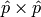
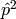

Tuning parameters¶
Hermitian to tridiagonal¶
Two different basic strategies are available for the reduction to tridiagonal form:
- Run a pipelined algorithm designed for general (rectangular) process grids.
- Redistribute the matrix so that it is owned by a perfect square number of processes, perform a fast reduction to tridiaogal form, and redistribute the data back to the original process grid. This algorithm is essentially an evolution of the HJS tridiagonalization approach (see “Towards an efficient parallel eigensolver for dense symmetric matrices” by Bruce Hendrickson, Elizabeth Jessup, and Christopher Smith) which is described in detail in Kenneth Stanley’s dissertation and briefly described in “Application of a high performance parallel eigensolver to electronic structure calculations” by Mark Sears, Ken Stanley, and Greg Henry.
There is clearly a small penalty associated with the extra redistributions necessary for the second approach, but the benefit from using a square process grid is usually quite signficant. By default, HermitianTridiag will run the standard algorithm (approach 1) unless the matrix is already distributed over a square process grid. The reasoning is that good performance depends upon a “good” ordering of the square (say, ) subgrid, though usually either a row-major or column-major ordering of the first  processes suffices.
- type HermitianTridiagApproach¶
- HERMITIAN_TRIDIAG_NORM: Run the pipelined rectangular algorithm.
- HERMITIAN_TRIDIAG_SQUARE: Run the square grid algorithm on the largest possible square process grid.
- HERMITIAN_TRIDIAG_DEFAULT: If the given process grid is already square, run the square grid algorithm, otherwise use the pipelined non-square approach.
Note
A properly tuned HERMITIAN_TRIDIAG_SQUARE approach is almost always fastest, so it is worthwhile to test it with both the COLUMN_MAJOR and ROW_MAJOR subgrid orderings, as described below.
Note
The first algorithm heavily depends upon the performance of distributed basic::Symv and basic::Hemv (for real and complex data, respectively), so users interested in maximizing the performance of the first algorithm will likely want to investigate different values for the local blocksizes through the routines basic::SetLocalSymvBlocksize<T>( int blocksize ) and basic::SetLocalHemvBlocksize<T>( int blocksize ); the default values are both 64.
- void advanced::SetHermitianTridiagApproach(HermitianTridiagApproach approach)¶
Sets the algorithm used by subsequent calls to advanced::HermitianTridiag.
- HermitianTridiagApproach advanced::GetHermitianTridiagApproach()¶
Queries the currently set approach for the reduction of a Hermitian matrix to tridiagonal form.